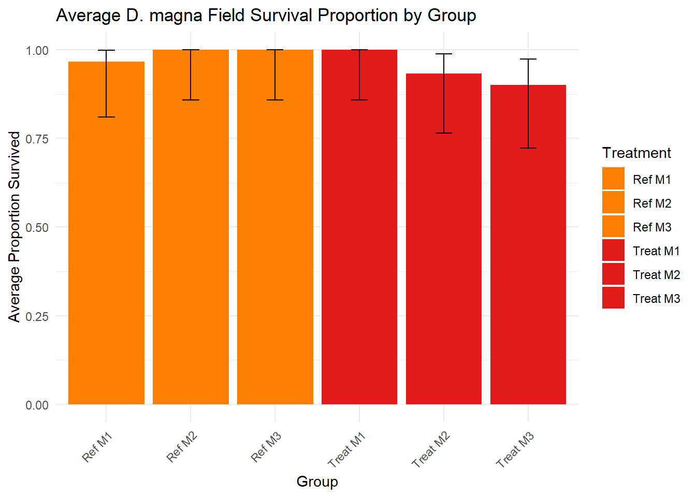
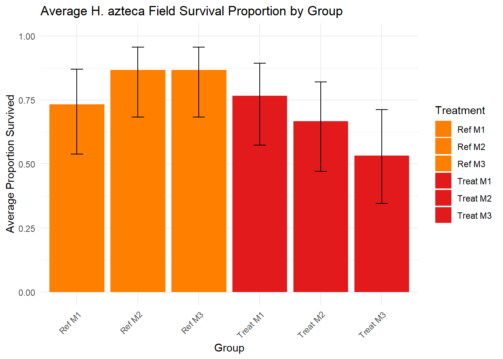

Briefly describe your research question and why it matters.
The purpose of this study is to explore the potential impact of glyphosate use on aquatic benthic macroinveretebrates. In this study, we utilize two test species Daphnia magna and Hyalella azteca for in-situ exposures. Using in-situ exposure chambers, we can consider environmentally realistic conditions while examining the potential impacts of glyphosate exposure, an advantage over traditional toxicity testing.
At the Lake Orion Dog Park in Lake Orion, Michigan, there is a large lake named Lake Sixteen. Lake sixteen has a northern and a southern inlet. The northern inlet was utilized as a reference site, which did NOT receive glyphosate treatment. The southern inlet was utilized as the treated site, which DID receive glyphosate treatment.
At each site, three mescososms were installed into the stream channel. Mesocosms were used in order to control for dissolved oxygen (DO), as they allowed for us to use aerators. Each mesocosm had 3 in-situ exposure chambers with ten of each test species inside. This means that each mesocosm had 30 D. magna and 30 H. azteca. In total, there were 90 reference organisms, 90 treated organisms,30 lab controls, and 30 travel controls for each test species.
After a 48 hour exposure period, organisms were taken back to the lab for post-exposure monitoring. We measure survival for both species, reproduction in D. magna, and biomass in H. azteca. In this document, we will only look at initial field exposure survival data. This means that the data we are looking at here is the initial survival of the test groups upon retrieval of organisms from the stream. Survival was recorded again after the post-exposure monitoring culture period, but that data is not explored in this document.
It is important to examine initial survival counts to see if there were immediate responses to field exposure. It is also important to know the survival of test organisms before they enter the post-exposure monitoring phase of the study, as some organisms may experience mortality during that time.
Describe your data source(s) and any cleaning steps.
# load packages and data here
library(ggplot2)
library(sf)
library(tidyverse)
library(ggplot2)
library(reshape2)
library(dplyr)
library(readxl)
library(binom)
library(emmeans)
library(car)
field_sur <-read_excel("Field Survival.xlsx", sheet = "Run1")
head(field_sur) ## # A tibble: 6 × 8
## `Date:` Treatment Replicate percent_survival Alive Dead Total
## <dttm> <chr> <dbl> <dbl> <dbl> <dbl> <dbl>
## 1 2025-07-24 00:00:00 Treat M1 1 1 10 0 10
## 2 2025-07-24 00:00:00 Treat M1 2 1 10 0 10
## 3 2025-07-24 00:00:00 Treat M1 3 1 10 0 10
## 4 2025-07-24 00:00:00 Treat M2 1 1 10 0 10
## 5 2025-07-24 00:00:00 Treat M2 2 0.8 8 2 10
## 6 2025-07-24 00:00:00 Treat M2 3 1 10 0 10
## # ℹ 1 more variable: `Comments:` <chr>#column to classify into categories by treatment group
field_sur$Category <- ifelse(grepl("Ref", field_sur$Treatment), "Ref",
ifelse(grepl("Treat", field_sur$Treatment), "Treat", NA))
#setting up proportions and total surivival because we will need to use Wilson
#for CIs because our sample size is so small. N3 for 3 replicate groups.
field_sur <- field_sur %>%
mutate(
Survivors = percent_survival * 10,
Total = 10
)
summary_fsurv <- field_sur %>%
group_by(Treatment) %>%
summarise(
total_survivors = sum(Survivors),
total_individuals = sum(Total),
mean_survival = mean(percent_survival) #not actually % but proportion.
) %>%
rowwise() %>%
mutate(
ci = list(prop.test(total_survivors, total_individuals)$conf.int),
ci_lower = ci[[1]],
ci_upper = ci[[2]]
) %>%
ungroup()# analysis code, plots, tables
# Plot daphnia field survival
ggplot(summary_fsurv, aes(x = Treatment, y = mean_survival, fill = Treatment)) +
geom_bar(stat = "identity") +
geom_errorbar(aes(ymin = ci_lower, ymax = ci_upper), width = 0.2) +
ylim(0, 1) +
theme_minimal() +
labs(title = "Average D. magna Field Survival Proportion by Group",
x = "Group",
y = "Average Proportion Survived") +
scale_fill_manual(values = c(
"Ref M1" = "#ff7f00",
"Ref M2" = "#ff7f00",
"Ref M3" = "#ff7f00",
"Treat M1" = "#e31a1c",
"Treat M2" = "#e31a1c",
"Treat M3" = "#e31a1c"
)) +
theme(axis.text.x = element_text(angle = 45, hjust = 1))
Describe your data source(s) and any cleaning steps.
# load packages and data here
library(ggplot2)
library(sf)
library(tidyverse)
library(ggplot2)
library(reshape2)
library(dplyr)
library(readxl)
library(binom)
library(emmeans)
library(car)
#Hyalella azteca Survival Graph
#Similar to before, we will clean our initial survival data for H. azteca
field_sur_hya <-read_excel("Field Survival.xlsx", sheet = "Run1_Hya")
head(field_sur_hya) ## # A tibble: 6 × 8
## `Date:` Treatment Replicate percent_survival Alive Dead Total
## <dttm> <chr> <dbl> <dbl> <dbl> <dbl> <dbl>
## 1 2025-07-24 00:00:00 Ref M1 1 0.6 6 4 10
## 2 2025-07-24 00:00:00 Ref M1 2 0.7 7 3 10
## 3 2025-07-24 00:00:00 Ref M1 3 0.9 9 2 10
## 4 2025-07-24 00:00:00 Ref M2 1 1 10 0 10
## 5 2025-07-24 00:00:00 Ref M2 2 0.8 8 2 10
## 6 2025-07-24 00:00:00 Ref M2 3 0.8 8 2 10
## # ℹ 1 more variable: `Comments:` <lgl>#column to classify into categories
field_sur_hya$Category <- ifelse(grepl("Ref", field_sur_hya$Treatment), "Ref",
ifelse(grepl("Treat", field_sur_hya$Treatment), "Treat", NA))
#setting up proportions and total surivival because we will need to use Wilson
#for CIs because our sample size is so small. N3 for 3 replicate groups.
field_sur_hya <- field_sur_hya %>%
mutate(
Survivors = percent_survival * 10,
Total = 10
)
summary_fsurv_hya <- field_sur_hya %>%
group_by(Treatment) %>%
summarise(
total_survivors = sum(Survivors),
total_individuals = sum(Total),
mean_survival = mean(percent_survival) #not actually % but proportion.
) %>%
rowwise() %>%
mutate(
ci = list(prop.test(total_survivors, total_individuals)$conf.int),
ci_lower = ci[[1]],
ci_upper = ci[[2]]
) %>%
ungroup()# analysis code, plots, tables
ggplot(summary_fsurv_hya, aes(x = Treatment, y = mean_survival, fill = Treatment)) +
geom_bar(stat = "identity") +
geom_errorbar(aes(ymin = ci_lower, ymax = ci_upper), width = 0.2) +
ylim(0, 1) +
theme_minimal() +
labs(title = "Average H. azteca Field Survival Proportion by Group",
x = "Group",
y = "Average Proportion Survived") +
scale_fill_manual(values = c(
"Ref M1" = "#ff7f00",
"Ref M2" = "#ff7f00",
"Ref M3" = "#ff7f00",
"Treat M1" = "#e31a1c",
"Treat M2" = "#e31a1c",
"Treat M3" = "#e31a1c"
)) +
theme(axis.text.x = element_text(angle = 45, hjust = 1))
Summarize key findings in plain language. Include figures/tables above.
By looking at the D. magna surivial graph, there is seemingly no major differences in initial survival between the reference D. magna and the treatment D. magna. However, when we look at the H. azteca survival graph, we see that there may be some slight difference in initial survival between reference H. azteca and Treatment H. azteca. Further analysis and investigation is needed here, though.
Limitations, follow-ups, and what you’d do next. My next steps are to look at final survival numbers, with all test groups (Lab and Travel Controls) for both species. During the post-exposure monitoring period, we did see some die offs that need to be explored, using the Controls for reference. Survival is our least sensitive endpoint, in a way, because we can’t tease out finer, sublethal changes. However, this is why we also investigate reproduction in D. magna and biomass in H. azteca. I plan to run some simple ANOVAs to tease out significant difference between all treatment groups, especially with Daphnia reproduction.